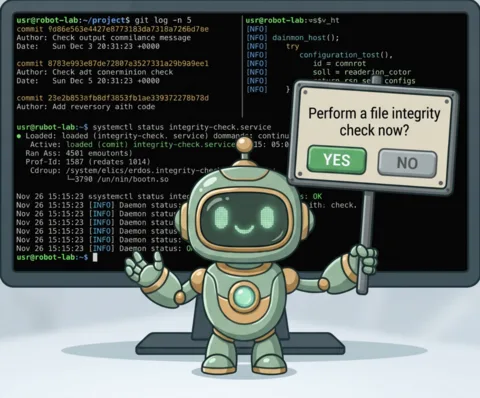

AgentBox
desktop interaction hub for AI agents · Go, Linux/X11

An agent works for twenty minutes while you are somewhere else. The moment it needs one word from you, it either waits in a terminal nobody is watching, or it guesses, and you find out later in the diff. AgentBox is the third option.
When an agent needs a decision, a credential or an approval, a card appears over whatever you are doing. A short sound tells you what kind of thing arrived before you even look. Every option has a number, the whole exchange is one keystroke, and the answer lands back in the code that was blocked on it. Mis-clicked? Answers hold for three seconds behind an undo strip.
if agentbox confirm --title "Push to main?" --body "12 commits, tests green"; then
git push
fi
agentbox notify --level success --title "release is live" \
--speak "the release is out" # non-blocking, spoken aloudTwenty tools: questions, forms, diff reviews with approve and request-changes, progress bars, spoken lines, masked secret entry. All of them over MCP, and the same twenty from the shell. All of it local: no cloud, no account, nothing leaves the machine.
Snapper
screenshot capture and annotation · Go, Gio
Snapper starts from Flameshot's in-overlay speed and Snagit's magnifier precision, then adds the editor I always wanted: one where nothing ever flattens. Every arrow, label and redaction stays a separate object you can reselect, restyle or move next week. A scene saves as a .snap project, not a baked PNG.
The small decisions are where it earns its keep. Annotations pick white or black by themselves so they read on any background. Closing the editor never loses work; unsaved changes drop a recovery file. And capture history is searchable by the text inside your screenshots, through OCR.
Grabbit
download manager · Go, Wails, Svelte
A download manager for Linux, built because I loved what JDownloader did and wanted it lean, native and scriptable. Copy a link and Grabbit takes it from there: several connections per file, clean resume after a crash or a reboot, multi-part archives grouped into one package.
My favourite part is the free-hoster machinery. A countdown timer? It waits it out in the background. A captcha? It opens a real browser window, lets you solve it, then carries the whole solved session (cookies, TLS fingerprint and all) into the download. You do the two seconds only a human can do; it does the rest.
New sites are small YAML or JavaScript profiles dropped in a folder, no rebuild. And everything the desktop app can do, a script or an agent can do too, through one control API over MCP and HTTP/JSON-RPC.
Earlier work
JVM, graph databases, Spark
An earlier era, mostly Java and Neo4j. Archived on GitLab and no longer active, but the code is all there.
- q-runner expose Java business logic as REST endpoints
- giraffe graph entity ingestion tooling
- neogoodies utilities for working with Neo4j
- neo_embedded embedded Neo4j instances for unit tests
- spark_datasource a minimal Spark datasource
Say hello
All three tools are open source, and the READMEs are the real documentation. If one of them would be useful to you, take it. If you want to change it, issues and patches are welcome.
Anything else, write to me.